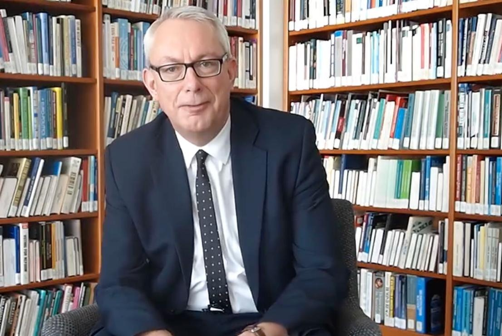
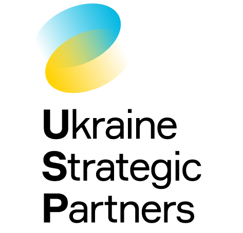
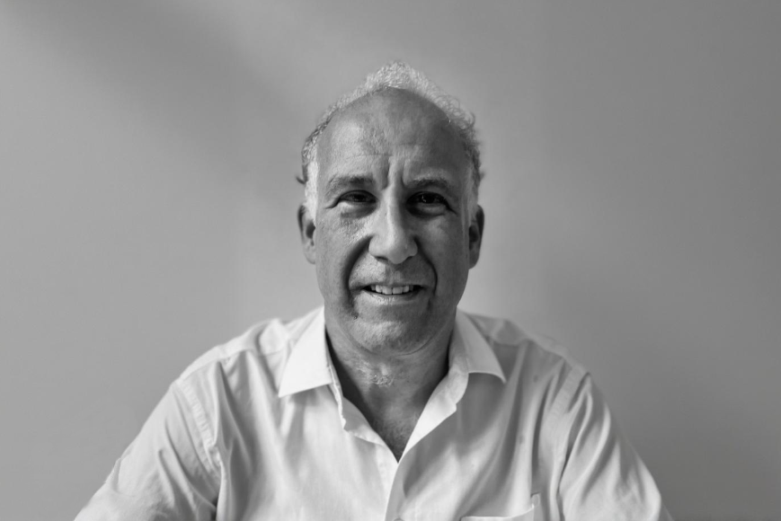
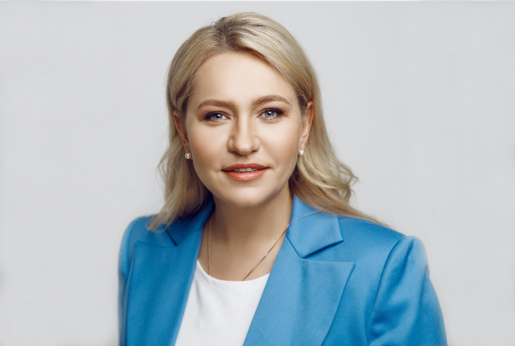

Andrew Young
Founder & CEO

We support international companies investing in Ukraine's future.
We draw on a team of highly experienced consultants with deep knowledge of Ukraine and the wider region. Each team member has a strong track record of advising international clients and navigating complex political, economic, and regulatory environments.
Together, we offer exceptional networks and insights to support effective decision-making and strategic engagement. We leverage unparalleled networks within the Ukrainian government and with partner governments, as well as 20 years of experience supporting investors in Central and Eastern Europe.

Founder & CEO

Government Relations Consultant

Director, Europe

Director of Academic Partnerships and Innovation

Legal & IP Strategy Consultant

Stakeholder Relations Manager

Municipal Partnerships Manager

Chairman of USP Advisory Board

Senior Advisory Board Member – Corporate & Political Strategy

Senior Advisor USP Ukraine

Advisory Board Member – Strategy & Economic Development
Championed international engagement with Ukraine, emphasising the importance of strategic partnerships between the UK and Ukraine for long-term regional stability and shared economic growth.
Highlighted the significance of UK–Ukraine cooperation and the critical role that strategic consultancy plays in strengthening bilateral ties and advancing reform.
Endorsed the initiative as a vital bridge between British enterprise and Ukraine's emerging market opportunities, underscoring the value of informed, on-the-ground advisory.